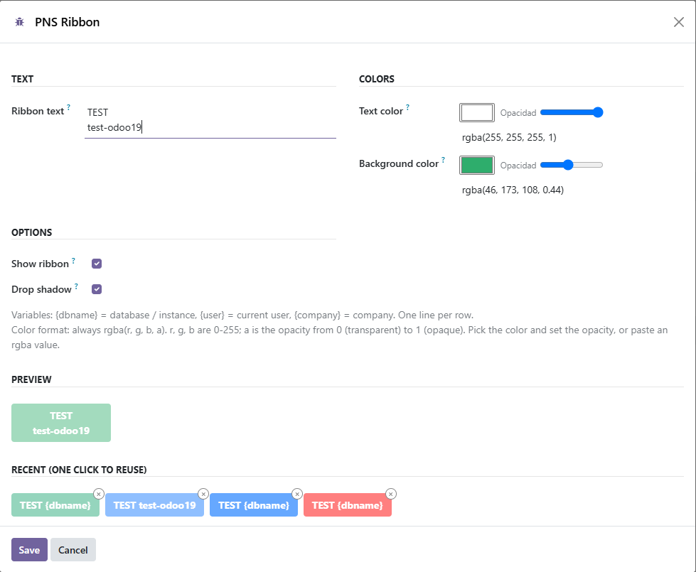

A corner banner so a test database is not mistaken for production.
Settings → Technical → PNS Ribbon. Administrators only (the Settings group).
Text, colours, a live preview, and the last 20 colour pairs.
The same values can be edited as system parameters
(pns_ribbon.html, pns_ribbon.textColor,
pns_ribbon.backgroundColor, pns_ribbon.enabled,
pns_ribbon.shadow) under
Settings → Technical → System Parameters.

Part of Patanegra Soft Suite. A diagonal banner on the backend (TEST, DEV, STAGING). The script and the stylesheet are plain files in the page head, so an OWL upgrade does not remove the banner.
On Odoo 14 to 19 it depends only on the Community module web.
On Odoo 20 it also needs pns_base (Apache 2.0, Patanegra Soft Suite),
which brings back the access-rights file and get_param that Odoo 20 dropped.
{dbname}, {user}, {company}.rgba().14.0 to 20.0), or run install_flat.sh for that series.pns_base too), update the app list, and install Ribbon.14.015.016.017.018.019.020.0
Each one tested, with its flat branch. Odoo 13 and older are not supported: Patanegra Soft Suite starts where its AI can run (OWL for the chat, Python 3.7 for the engine).
On GitHub: patanegra-soft/pns_ribbon.
main is one tree for every series: shared code in common/ and one stack per OWL generation (owl1 for Odoo 14 and 15, owl2 for 16 to 19, owl3 for 20). Clone it to maintain several Odoo versions from one place../install_flat.sh 19.0 <dir> builds the flat module of a series. The branches 14.0 to 20.0 are that result, ready for the addons path.unit_tests/, pytest) live in main. Odoo tests are in the module's tests/.Bugs: an issue, with the bug form. Ideas and questions: Discussions.
| Module | Where | Role |
|---|---|---|
pns_ribbon |
Odoo 14 to 20 | This banner. Depends on web; on Odoo 20, also on pns_base. |
Part of Patanegra Soft Suite.
PATANEGRA Soft™ — Apache License 2.0 (OSI approved). See LICENSE and NOTICE. PATANEGRA Soft and PATANEGRA Soft Suite are trademarks of PATANEGRA Soft SL. The Apache license does not grant trademark rights.